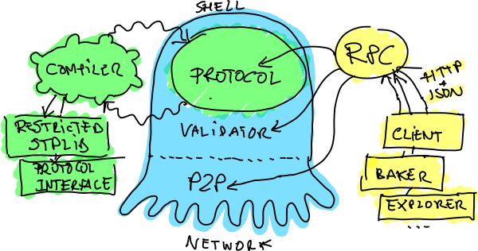
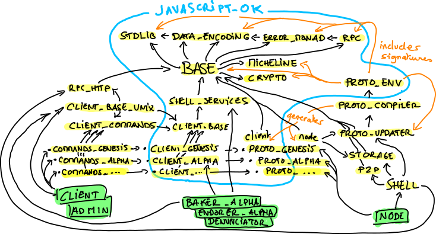

Octez Software Architecture#
This page presents the software architecture of the Octez suite, focusing on the most important tool in a Tezos network: the Tezos node, implemented in our case as the Octez node executable (octez-node).
The Octez node software architecture faithfully implements the Tezos software architecture principles:
It is separated into a shell and a protocol, to support protocol evolution.
It implements a client/server architecture, to allow composition with many other tools in a safe way.
This page contains two sections. The first section, which should be readable by anyone, describes the main elements of a Tezos node from a distance. It abstracts from all plumbing and both internal and system dependencies to give a simple view of the main components, their responsibilities, and interactions. The second part is written for developers and is at the level of OPAM packages.
Although the description is focused on the Octez node, some of these components are reused to generate other tools in the Octez suite, see The Final Executables.
The Big Picture#
The diagram below shows a very coarse-grained architecture of the Tezos node.

The characteristic that makes Tezos unique is its self-amending property. The part that amends itself is called the economic protocol (the green brain of the octopus), sometimes abbreviated by protocol or even proto in the source code. The rest of a Tezos node is what we call the shell (the blue octopus).
The protocol is responsible for interpreting the transactions and other administrative operations. It also has the responsibility to detect erroneous blocks.
An important thing to notice is that the protocol always sees only one block chain, that is a linear sequence of blocks since the genesis. It does not know that it lives in an open network where nodes can propose alternative heads.
Only the shell knows about the multiple heads. It is responsible for choosing between the various chain proposals that come from the bakers (the programs that cook new blocks) of the network. The shell has the responsibility of selecting and downloading alternative chains, feed them to the protocol, which in turn has the responsibility to check them for errors, and give them an absolute score. The shell then simply selects the valid head of the highest absolute score. This part of the shell is called the validator.
The rest of the shell includes the peer-to-peer layer, the disk storage of blocks, the operations to allow the node to transmit the chain data to new nodes and the versioned state of the ledger. In-between the validator, the peer-to-peer layer, and the storage sits a component called the distributed database, that abstracts the fetching and replication of new chain data to the validator.
Protocols are compiled using a tweaked OCaml compiler (green part on the left of the picture) that does two things. First, it checks that the protocol’s main module has the right type. A good analogy is to see protocol as plug-ins, and in this case, it means that it respects the common plugin interface. Then, it restricts the typing environment of the protocol’s code so that it only calls authorized modules and functions. Seeing protocols as plug-ins, it means that the code only called primitives from the plug-in API. It is a form of statically enforced sandboxing (see Protocol Environment).
Note that the economic protocol on the chain is subject to an amendment procedure. On-chain operations can be used to switch from one protocol to another. The procedure is described in more details in the protocol’s voting procedure documentation.
Finally, the RPC layer (in yellow on the right in the picture) is an
important part of the node. It is how the client, third-party
applications and daemons can interact with the node and introspect its
state. This component uses the mainstream JSON format and HTTP
protocol. It uses the library resto. It is fully
interoperable, and auto descriptive, using JSON schema.
Software Architecture and Packages Relationship#
The diagram below shows the main OPAM packages present in the source
code of Tezos, and their dependencies. The tezos- or octez- prefixes have been
dropped for clarity.

In green at the bottom are binaries. Highlighted in yellow are the OPAM packages (sometimes with shortened names). Black arrows show direct dependencies. Orange arrows show other indirect relationships (code generation, interface sharing), explained below. The part circled in blue, contains modules that bear no dependency to Unix, and can thus be compiled to JavaScript. External dependencies are not shown in this illustration.
Note that many packages described below are grouped in a single one: octez-libs. This includes packages as diverse as tezos-stdlib , tezos-base , tezos-shell-services , tezos-context , etc.)
Base and below#
At the center, the tezos-base package is where the blockchain specific code starts. Above it in the figure (but below in terms of abstraction level) is the set of libraries that are used everywhere for basic operations.
tezos-stdlib contains a few extensions over the OCaml standard library (a few string primitives, an
Optionmodule, etc.), a fewLwtutilities, and aComparemodule that implements monomorphic comparison operators.tezos-error-monad is an in-house monadic interface to the OCaml
('a, 'b) resulttype, that fixes the'bto an extensible typeerror(actually a list, to hold an error trace). When extending the type, programmers must also call theregister_errorfunction that registers a pretty printer and an encoding for serialization. A tutorial is available for this library.tezos-rpc provides the basics of Tezos’ RPC service mechanism. It provides combinators for building service hierarchies à la Ocsigen/Eliom, registering, and calling services. This module is based on resto, that allows for automatic generation of machine and human-readable descriptions of the hierarchy of services, including: the structure of URLs and the expected formats for input and output bodies, via the use of
data_encoding.tezos-crypto wraps the external cryptography libraries that we use. We try to use minimal reference implementations, with as thin as possible bindings, and rely on libraries from the HACL* project, written and verified in the F* programming language, and extracted to C.
tezos-micheline is the concrete syntax used by Michelson, the language of smart contracts. It mostly contains the generic, untyped AST, a printer, and a parser.
tezos-base wraps all these modules in a common foundation for all the other components of Tezos, and introduces the data structures of the blockchain (e.g.
Block_hash,Block_header,Block_locator,Fitness,P2p_identity) that are shared between the shell, economic protocol, client, daemons and third-party software. It also rewraps some modules fromcryptoas functors that build all-in-one modules for a given type (for instance, the module for block hashes contains all possible converters, command line and RPC argument builders, pretty printers, an autocompleter, etc.). This package also contains thecli_entriesmodule that we use to handle command-line parsing in some executables.
The Shell#
The shell is the part of the node responsible for all communications, peer-to-peer and RPC, acting as a cocoon around the economic protocols.
tezos-shell-services contains the definition of the node’s service hierarchy, and calling functions to use in the client (or any third party software). As this library is linked into the client to call the services in a type-safe way, only the description of services is done here. The registration of handlers is done in the rest of the node’s implementation.
tezos-rpc-http-client and tezos-rpc-http-server use cohttp to implement the RPC over HTTP server and client, allowing to make actual use of services declared using tezos-rpc .
tezos-p2p is the in-house peer-to-peer layer.
tezos-store is the chain-data store that handles on-disk block storage, snapshots exporting/importing and chain reconstruction.
tezos-context contains the raw versioned key-value store used for storing the ledger’s context (one version per block). This is implemented using irmin.
tezos-protocol-updater maintains the table of available protocol versions, embedded or dynamically linked.
tezos-shell implements the scheduling of block validations, the mempool management, and the distributed database. A description is available in this document.
The Economic Protocol Environment and Compiler#
Economic protocols are compiled by a specific version of the OCaml compiler. This compiler restricts the set of modules available to the economic protocol, as a form of static sandboxing. It also generates a functorized version of the protocol, to make the execution of the protocol in an alternative environment possible.
tezos-protocol-environment contains the protocol generic environment, that is the API of the modules that are available to the economic protocol and the exported protocol API. A review of this sandbox is available here. These modules include a stripped-down standard library, and interfaces to the crypto APIs, RPC definitions, and a key-value store. It also defines two different context instances: one that simulates the key-value store in memory for testing, and one whose context function are dummy ones which can be used when only the types and noncontextual functions of the protocol are needed.
octez-protocol-compiler is the compiler for economic protocols: an alternative driver to the OCaml ocaml-compiler-libs that typechecks within the protocol environment, and performs some more checks on the protocol code.
tezos-protocol-xxxis produced by the protocol compiler and contains a functorized version of protocolxxxthat takes its standard library as a parameter. This parameter can be filled with any of the implementations described in the two points below.tezos-shell-context implements a context representation that is accepted by the protocol environment. The node uses this instance to read and write data on disk.
tezos-embedded-protocol-xxxcontains a version of the protocolxxxwhose standard library is pre-instantiated to the shell’s implementation, these are the ones that are linked into the node. It also contains a module that registers the protocol in the node’s protocol table.
The Embedded Economic Protocols#
Three kinds of economic protocols are included in the main Octez repository.
The genesis protocol. tezos-protocol-genesis (tezos-embedded-protocol-genesis ) is the protocol of the genesis block. It accepts a single block, signed by an activator whose public key is hardcoded, and whose single action is to switch to a new protocol chosen by the activator. The
masterbranch contains additional variants of the genesis protocol, one for each of the existing test networks.The active protocols.
tezos-protocol-nnn-hhhhhhhh(tezos-embedded-protocol-nnn-hhhhhhhh) is either the current protocol on Mainnet or a protocol that has been active on Mainnet at some point, wherennnis a counter starting at 0 andhhhhhhhhis a prefix of the hash of the protocol code. Also, tezos-protocol-alpha (tezos-embedded-protocol-alpha ) on themasterbranch is the protocol currently under development (see here for more details). A tutorial is available to start reading the protocol’s code.Demo protocols. tezos-embedded-protocol-demo-noops is just a demo protocol that does nothing interesting but has the right shape. tezos-embedded-protocol-demo-counter is another demo protocol in which blocks can contain simple operations.
The Client Library#
The client is split into many packages, to enforce three separation lines: shell vs economic protocol, Unix dependent vs JavaScript compatible, and library vs command-line interface.
tezos-client-base defines the client context, which is an object whose methods allow for: accessing a wallet of keys, interacting via the user, making RPC calls, and signing data using signer plug-ins. Most of them, including RPC calling functions from tezos-shell-services and tezos-protocol-alpha, are abstracted over this object type. That way, it is possible to use the same code for different platforms or toolkits.
tezos-client-alpha provides some functions to perform the operations of protocol Alpha using the wallet and signers from the client context.
tezos-client-genesis contains the basic activator commands available on the genesis protocol.
tezos-client-base-unix implements configuration file and wallet storage in Unix files, user interaction via the Unix console, and terminal based signer plug-ins.
Tests Packages#
The tests are split into various packages, testing more and more
elements while following the dependency chain. Use make test to
run them.
tezt/: end-to-end tests as Tezt tests that e.g. launch local sandboxed nodes and performs various tasks using the client
tezos-p2p (in directory src/lib_p2p/test/): tests of the peer-to-peer layer, independently of the Tezos gossip protocol (establishing connections, propagating peers, etc.)
tezos-protocol-environment (in directory src/lib_protocol_environment/test/): tests for the in-memory context implementation.
tezos-shell (in directory src/lib_shell/test/): tests for the chain data storage.
tezos-stdlib (in directory src/lib_stdlib/test/): tests for the basic data structures.
tezos-context (in directory src/lib_context/test/): tests for the versioned key-value context.
tezos-store (in directory src/lib_store/unix/test/): tests for the on-disk store.
tezos-protocol-alpha (in directory src/proto_alpha/lib_protocol/test/): tests of the Alpha protocol (without launching a node).
tezos-crypto (in directory src/lib_crypto/test/): tests for the in-house merkle trees.
The Final Executables#
The Octez executables are generated from packages such as the following ones (for the complete list of binaries, see The Binaries):
octez-node provides the node launcher binary
octez-node. All the algorithmic being implemented in the shell, this package only implements the node’s CLI. It also provides the sandboxed node shell script launcher (see the main readme).octez-client provides the
octez-clientandoctez-admin-clientbinaries. The former contains a small command line wallet, the latter an administration tool for the node. It also provides a shell script that configures a shell environment to interact with a sandboxed node.octez-baker-alpha provides the
octez-baker-alphabinary.octez-accuser-alpha provides the
octez-accuser-alphabinary.octez-protocol-compiler provides the
octez-protocol-compilerbinary that is used by the node to compile new protocols on the fly, and that can be used for developing new protocols.